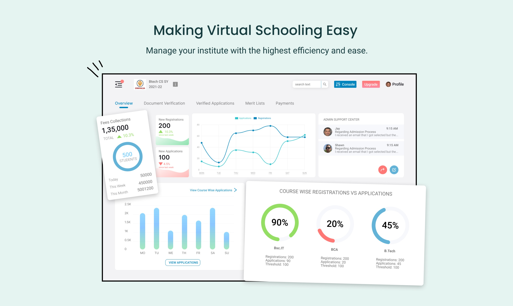
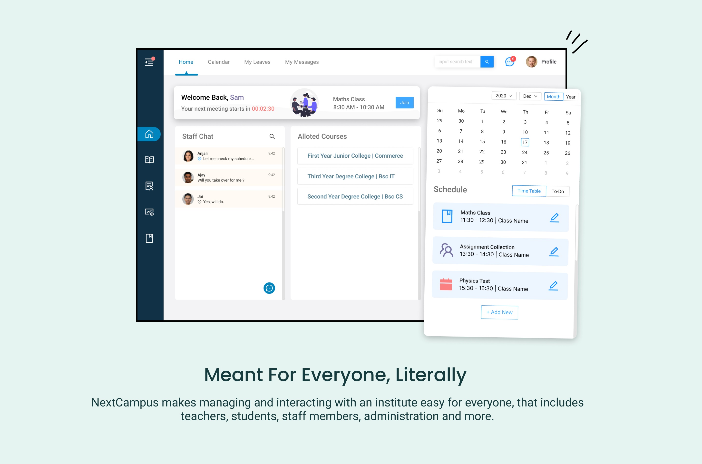

NextCampus
Designed For Develearn (2021)
→ Synopsis ←
NextCampus is Develearn's ERP (Enterprise Resource Planning) software that aims to make online education hassle free and fully customizable based on an institute's requirements.
Majority of my work was centered around NextCampus and it's various different modules,
during the first three months of my employment I created 80+ designs to lay down the foundation of the app,
from there I designed the product's official website and have continued to make improvements based on client requirement.
The modules that I worked on are:-
- Admission Module - which makes the admission process easier for both applicants and the staff processing them.
- Exam Module - which allows user to setup, conduct and review papers with ease.
- Student Module - an environment specifically tailored for students where they can keep track of their assignments, exams etc.
- Teacher Module - a home for teachers where they can add assignments, conduct lectures, keep track of their syllabus and review exams.
- Employee Resource Module - a portal for the HR where they can add/remove/edit employee records, configure payroll and monitor their leaves.
 
→ Thought Process ←
When it comes to a design that is functionally as complex as NC, I always use 'research' and 'empathy' to place myself in the user's shoes.
This method opens up a bunch of questions - What does the user want ? What functionality is necessary here ? What can I do to make this process easier ?
What can I do to make sure that even a person with no technological background can use and understand this app perfectly ?
These questions give me direction on how the design should be made, although client requirements might keep on changing, it is my responsibility to make sure that the foundational features are present, this way a design can remain scalable but also be complete in its own way.
When a module's ready, I would prototype the expected flow to test and see if anything was missing. This added robustness to the work by answering the questions above.

→ Challenges ←
The balance between a visually aesthetic and a functionally complete UI is a hard thing to achieve, especially when so many parameters and processes need to be taken into consideration beforehand.
→ The Solution ←
Important to keep the usability in priority focus, once that is established start by keeping things simple and minimalistic. This creates the foundational draft, from here reiterate and experiment with variants until a satisfactory version is formed. Review this version with the client and make improvements as required.

Visit NextCampus Official Website →